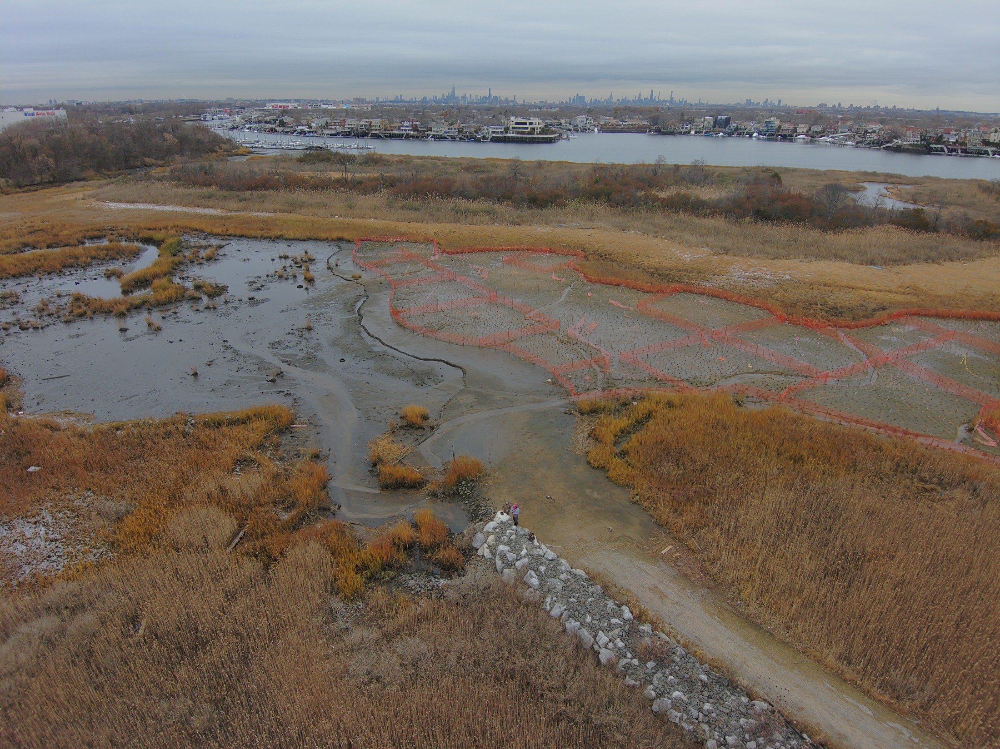
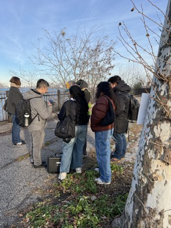
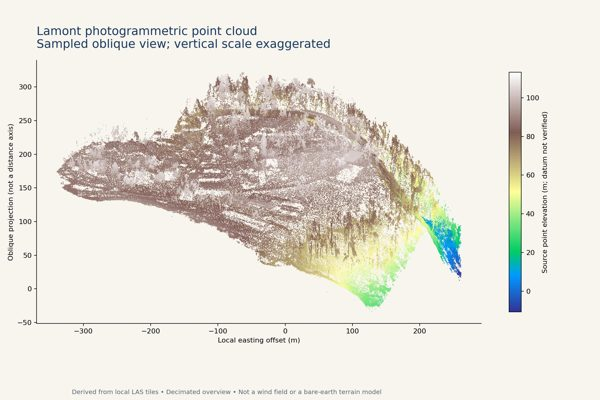

Morningside survey planning
Further survey work is planned for December 2026. Build on completed December 2025 flights to investigate terrain, runoff, and drainage questions.
FIELD NOTES / 2021—2026
Drone-based mapping, field education, and community-engaged research at Columbia University.
Follow the story ↓Explore the field atlas ↗
ONE CONNECTED PRACTICE
Field observations.
Spatial data. Research and teaching.
THREE WAYS INTO THE WORK

41 CURATED PLATESPhotographs, survey imagery, terrain, and 3D products from New York and Zambia.
 RAPHAEL’S LEARNING MODULE
RAPHAEL’S LEARNING MODULEFollow the journey from a folder of images to a documented observation and local question.

ACTUAL SOURCE-DATA SAMPLERotate a sampled point cloud and connect visible terrain to research questions.
01 / HOW THE WORK GREW
The chronology distinguishes funding, completed fieldwork, educational outputs, and planned activity. Several projects overlap in time.
02 / EXPLORE THE WORK
THE STUDENT EXPERIENCE
“The drone really opens up the possibility of assessing much more granular changes to elevation.”
Natan Charytan · Four Sparrow Marsh research
From the earlier “Let Students Lead” draft, where Natan is identified as the project’s lead researcher.

FROM FIELDWORK TO A STUDENT-CREATED LESSON
Raphael Sutiono and Kytt MacManus developed From Drone Imagery to Agricultural Decisions in Mtukuzi, Zambia: a working lesson on reading imagery, organizing data, and asking questions grounded in local context.
Explore two lessons and a capstone, compare actual companion products, and write a practice observation note.
Enter the learning chapter →03 / THE WORK AHEAD
Future dates and work remain subject to partner coordination and operational authorizations. Applications and outcomes require evaluation with project partners.
04 / THE PEOPLE BEHIND THE WORK
Kytt MacManus connects spatial analysis, field research, teaching, and community partnerships at Columbia University.
Applied Science Lead, Environmental Flow Physics Laboratory, with earlier and continuing collaborations through CIESIN.
Get in touch ↗Columbia is the common institutional identity. EFPL is central to NYC Parks and Lamont research. CIESIN is central to the earlier teaching work. HOT and Zambia connect both EFPL and CIESIN.
Students, community partners, Natan Charytan, NYC Parks, the Humanitarian OpenStreetMap Team, University of Zambia/NACUAS colleagues, and collaborating Columbia researchers all contribute to the story.
Provost Emerging Technology Grant: June 1, 2021, $19,637 plus CUIT support. Collaboratory support included a drone purchase for SDEV4650. DURIP supported the IF1200A purchase for EFPL’s ARO work. These are distinct investments.
Sources include award and course correspondence, local mapping and fieldwork reports, the Four Sparrow results deck, and the author’s first-hand corrections. Project sources appear within each chapter.
This research preview presents selected photographs and display derivatives with project credits and source notes. Scientific source files remain in the project archive.